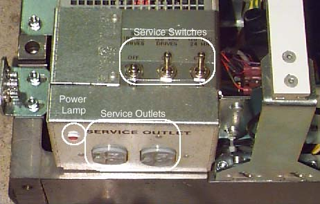
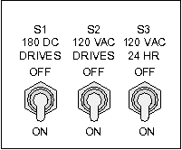

Operating Documentation
Direction 5114045-800, Rev# 10
LightSpeed 4.X Service Information (Advanced)
Operating Documentation |
The table base contains several lethal voltages. There are a number of points in the table where the voltages are dangerous (120 VAC and 170DC present). Theses points pose a potential electrical hazard to anyone that accidentally comes in contact with them.
A power lamp is located on the table power assembly. It is illuminated whenever power is present at the table service outlets. See Illustration 1.
A service outlet is located on the table’s power assembly (see Illustration 1). It is protected by CB3 in the PDU.
Illustration 1: Table Service Outlet and Safety Switches

The Table Safety Service switches are located on top of the power assembly. See Illustration 1. These switches are a subset of the 120VAC switch on the gantry.
Illustration 2: Table Switches

S1 180 DC Drives - Enables/disables 170VDC Power Supplies for table elevation.
S2 120VAC Drives - Enables/disables 24V Power Supply for table cradle & elevation.
S3 120VAC 24 HR- Enables/disables 120 VAC Table Power.
TOUCH SENSOR (JUMPER) SERVICE JUMPER
During service, the table touch sensors must remain operable for the table to fully function. To operate the table with the covers removed, the sensors must be jumpered.
Illustration 3: Table Touch Sensor Jumpered Out

Always wear personal protection equipment that prevents inhalation, digestion and absorption through skin of chemicals.